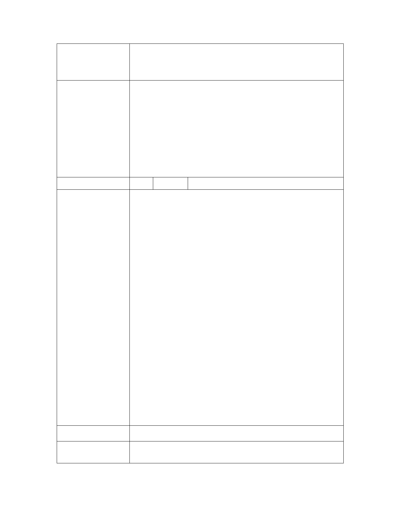

「變更臺北市文山區老泉段三小段358地號等5筆土地保護區為文化
案 名 景觀保存區主要計畫案」暨「擬定臺北市文山區『優人神鼓山上劇
場』文化景觀保存區細部計畫案」
一、有關優人神鼓山上劇場總監劉若瑀女士考量本市保護區變更
之環境敏感性，就本變更案提出撤案申請聲明書之舉，堪稱
典範，本委員會予以尊重與肯定。
二、案經申請單位文化局表示尊重優人神鼓撤案之申請，故本變
委員會決議
更案予以退回。
三、至於本案基地業已登錄「優人神鼓山上劇場」為文化景觀，
請文化局逕依文化資產保存法進行文化景觀之保存維護與輔
導。
編 號 2 陳情人 財團法人地球公民基金會
1. 「變更臺北市文山區老泉段三小段 358 地號等 5 筆土地保護區
為文化景觀保存區主要計畫案」暨「擬定臺北市文山區『優人
神鼓山上劇場』文化景觀保存區細部計畫案」，本會撤回 101
年 7 月 19 日（地球公民（北）101007）中「有嚴重破壞都市
計畫保護區體制以及製造城市災難之虞」之陳情意見。
2. 唯本案涉及保護區變更，仍應釐清以下程序問題：
（1） 依 貴會 97 年 4 月 15 日第 581 次委員會議紀錄，其中審議
北投行義路保護區變更案之決議三：「有關本市保護區的發
展政策，市府雖表示目前將不再針對保護區進行通盤檢討，
而是視個案基地特性與使用性質，透過個案變更的方式來進
陳情理由
行討論。惟為利後續個案變更審查需要，建議市府另行邀集
專家學者進行研討，針對保護區變更建立出一套政策指導綱
要或審議規範，以為未來審議之依據。」。貴會應依上述決
議，請市府提出保護區變更之政策指導綱要或審議規範，以
為 貴會審議本案之依據。
（2） 依監察院 101 年 6 月 7 日對台北市政府辦理「台北好好看」
系列計畫之調查與糾正，認為都市計畫法第 27 條之引用必
須具有「特定之重大事變造成特殊情況而有變更之必要」及
「必須有時間上的要求且來不及在通盤檢討中為之」之前
提。本案法令依據為都市計畫法第 27 條第 1 項第 4 款，是
否符合上列要件。
建 議 辦 法 同陳情理由。
1. 有關全市性保護區政策與通盤檢討變更處理原則，本府都市發
市府回覆
展局說明如下(請參閱附錄四)：
第 - 18 - 頁，共 31 頁